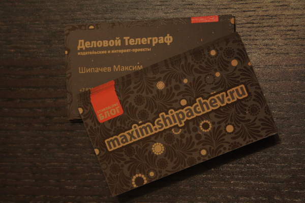

Заказал и в конце рабочей недели забрал комплект визиток. Давно хотел сделать себе что-нить вычурное, мол глядите как я знаю CorelDraw. Вот посидел и сделал.
Потом напечатали. 3 цвета, две стороны. Темно-коричневый плайк. Шелкография. Вообще самые красивые визитки делаются именно шелкографией. Хотя шелкография в Кемерово для таких вещей мало распространена. Выходит гораздо дороже чем оперативная печать.
Немного конечно цвета получились не те, которые хотел. На будущее учту. Визитки сделал с фоном, который уже давно поставил в шапку блога.

У Михаила Танича когда-то по этому поводу родилась песня
Еще вчера вдруг возникло необъяснимое желание узнать номер текущей недели. Клац-клац в интернете с наскоку ничего не нашлось.
Дело было вечером. До отбоя оставалось целых 30 минут… К утру уже разнеслись ns-записи. Теперь номер недели может узнать любой желающий.